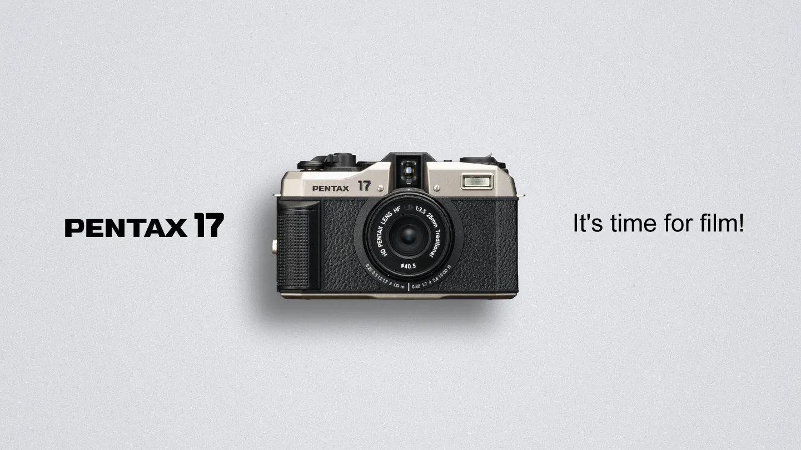
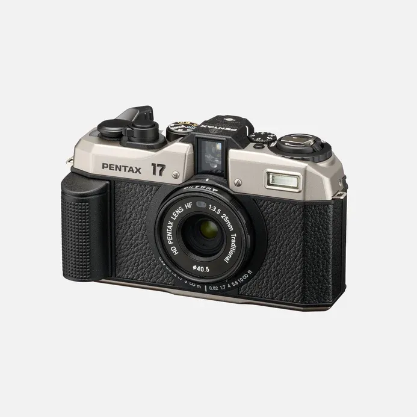
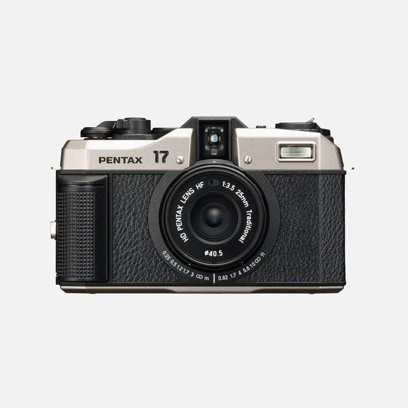
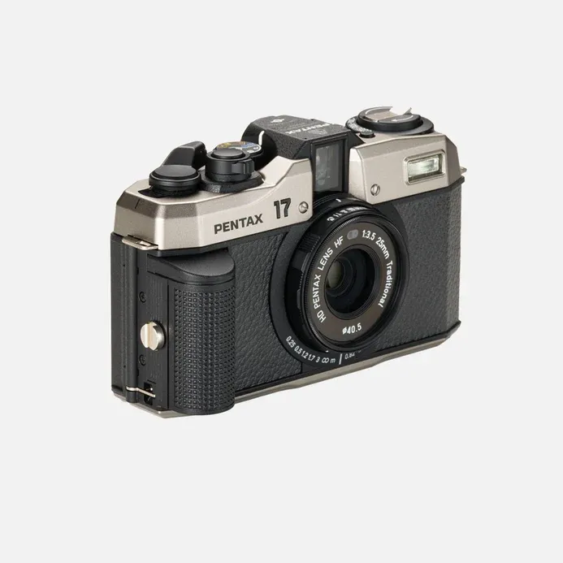
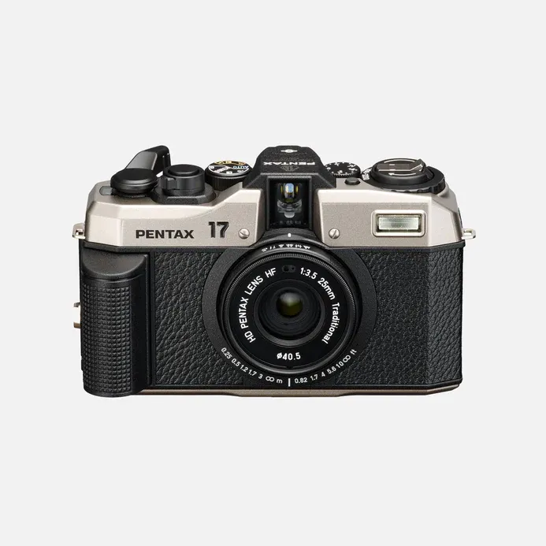
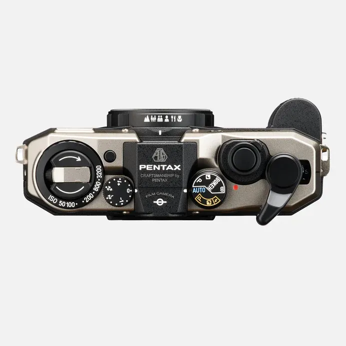
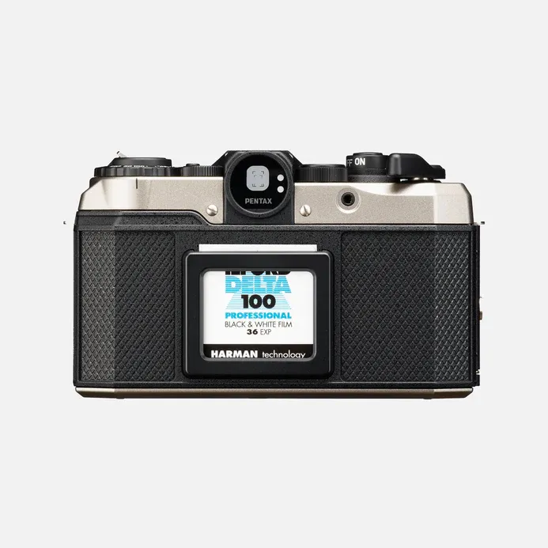
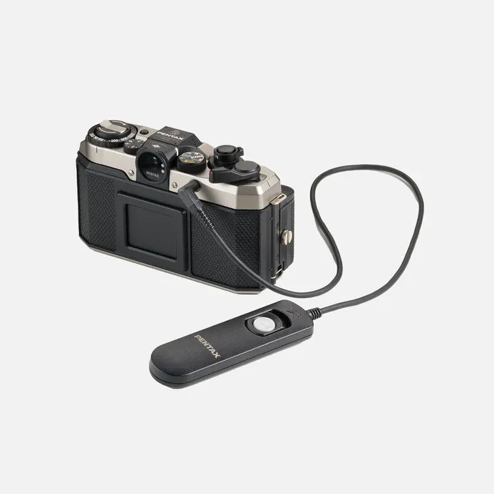
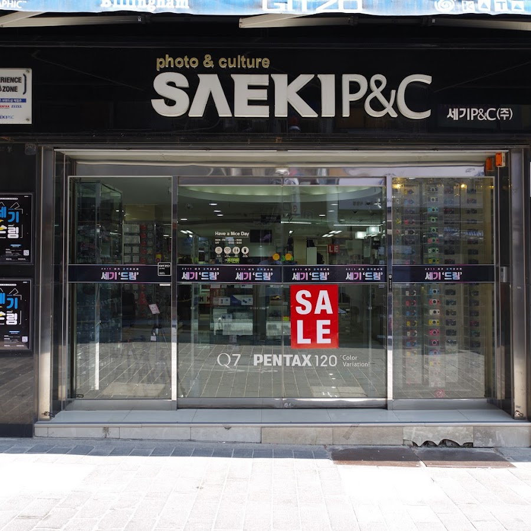

펜탁스에서 펜탁스 17 이라는 하프 프레임 필름 카메라를 발표했습니다. F3.5 / 25mm 일체형 단렌즈를 장착했으며, 필름 1장에 2컷을 촬영하는 하프 프레임 목측식 카메라입니다. 한국 정식 발매가 확정되었으며 가격은 799,000원입니다.

펜탁스17 출시
MX 와 Me super등 필름 카메라 시장에서 매니아 층을 가지고 있는 펜탁스에서 21년 만에 필름 카메라 신제품을 발표했습니다. 펜탁스 17 로 발표된 이 제품은 디지털 카메라의 시대에 모든 것을 수동으로 조절해야 하는 아날로그 향기를 흠씬 풍기는 필름 카메라로, F3.5 / 25mm 일체형 단렌즈를 장착했으며, 필름 1장에 2컷을 촬영하는 하프 프레임 목측식 카메라입니다.
펜탁스17 특징
필름 가격과 디지털화하는 필름 스캔 비용이 높아졌지만, 한국에도 아직 필름 카메라를 사용하는 유저들이 꽤 있고, 일본은 카메라 유저의 20% 정도가 필름 카메라를 사용한다고 합니다.
펜탁스 17은 일명 목측식 하프 필름 똑딱이 토이 카메라로 불리며, 다양한 렌즈를 교환해 사용할 수 있는 SLR 카메라에 비하면 성능이 떨어지겠지만, 여러 리뷰를 보면 기존의 똑딱이 카메라보다는 선명한 화질에 클래식한 외관을 갖춰 매니아들의 주목을 받고 있습니다. 무엇보다 DSLR 경쟁에 밀려 신제품이 나오지 않던 필름 카메라 시장에 새로운 파장을 일으키고 있습니다.







출처 https://pentax.eu/products/pentax-17
2024년 7월 17일 오늘 한국에서도 정식 발매가 확정되었으며, 일본 가격은 8만 8천엔, 한국 가격은 799,000원으로 아직 필름 카메라 매니아들이 환호하였습니다. 초도 물량 예약은 이미 끝난 상황입니다. 8월 초에 2차 예약을 받는다고 합니다. 초엔저 상황에 일본으로 펜탁스17 사러 가는 매니아들도 보입니다.
충무로의 세기P&C 에서 카메라 샘플을 만져볼 수 있다고합니다.
